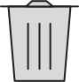
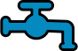
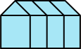

Bij Second Chance vind je voor jouw alle informatie die te maken heeft met het kopen en verkopen van
tweedehands spullen. Waarom is dat duurzaam en waar moet je opletten. Want niet alles is verstandig om
tweedehands te kopen. En soms is lenen/huren misschien wel beter. Kortom Second Chance is voor je gids als
het gaat om spullen een tweed leven te geven.
Geef je spullen een tweede leven
Je kent het wel je ruimt een kast op en je vindt allemaal spullen waarvan je niet meer
wist dat je ze had. En als je was vergeten dat je ze niet meer had, heb je zo vaak ook niet meer nodig.
Waarom is tweedehands goed?
Tweedehands spullen kunnen een flinke milieuwinst opleveren. Spullen hergebruiken verlengt namelijk de
levensduur. Als je iets tweedehands koopt hoeft niets nieuws gemaakt te worden. Zo bespaar je grondstoffen,
energie en afval die nodig zijn om nieuwe spullen te maken. Maar door tweedehands te kopen wordt er ook voor
gezorgd dat er jaarlijks zo’n 75.000 ton aan goederen niet op de afvalberg belangt.

Je vermijdt afval en verkleint de afvalberg
Je bespaart op grondstoffen voor nieuwe producten

Je vermijdt verbruik van wateren energie bij de productie van nieuwe dingen

Je voorkomt uitstoot van schadelijke broeikasgassen tijdens transport en productie
You can’t buy happiness, but you can buy vintage. That’s pretty much the same thing.
Tips om tweedehands te kopen/verkopen
Tegenwoordig kopen steeds meer mensen tweedehands spullen. Niet alleen omdat, het goedkoper is maar ook beter
voor het milieu. En vaak kan je weer iets als nieuw uitlaten zien door het een likje verf te geven.